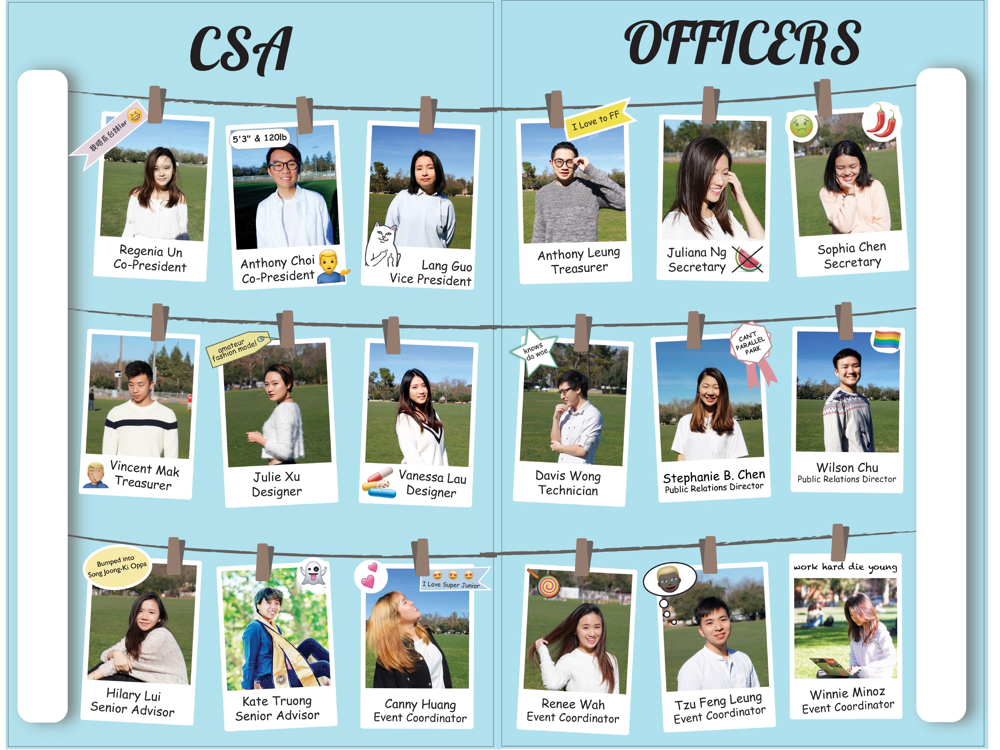

Museum Advertisments 2017 | Adobe Illustrator
This project is about the famous Dutch painter Piet Mondrian. His works are among the most influential art in the 20th century. I want to showcase not just the evolution of his red, blue, and yellow composition paintings, but also his unique signature, photo portrait and a self-portrait painting. For the typography, I used Futura and added colors to fit the scheme because futura is geometric and clean like Mondrian’s style and is from the same time period as his paintings.
Vector Drawing 2017 | Adobe Illustrator
These are the original drawings of a costume design in two color schemes.
Typography Poster 2017| Adobe Illustrator
PMN Caecilia is a Slab Serif font, commonly used for book font. I moved “aecilia” so that the “a” fits inside the “C” to show the unique slabs of the letters.
Bilingual Marketing Materials 2017-2018 | Adobe Illustrator, Photoshop
Bilingual flyer, poster and advertisement. I created these for UC Davis Chinese Student Association. Each year, the club holds a karaoke contest that attracts over 300 audiences. As karaoke finalists compete live during the contest, audience will receive a booklet that introduces the night’s program, CSA members, contestants, judges and local businesses that sponsored the event. These are some examples of the parts of the booklet that I designed.